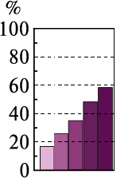

| до 0,17 | |
| 0,17-0,29 | |
| 0,30-0,40 | |
| понад 0,40 |
|  |
| Частка пам'яток та комплексів (ансамблів), навколо яких установлено зони охорони | |
| Частка історичних населених місць, що мають затверджені межі історичних ареалів та режими використання їх територій | |
| Частка пам'яток з укладеними охоронними договорами | |
| Частка пам'яток, на які оформлені паспорти об'єктів (пам'яток) культурної спадщини | |
| Частка пам'яток, що пройшли інвентаризацію |